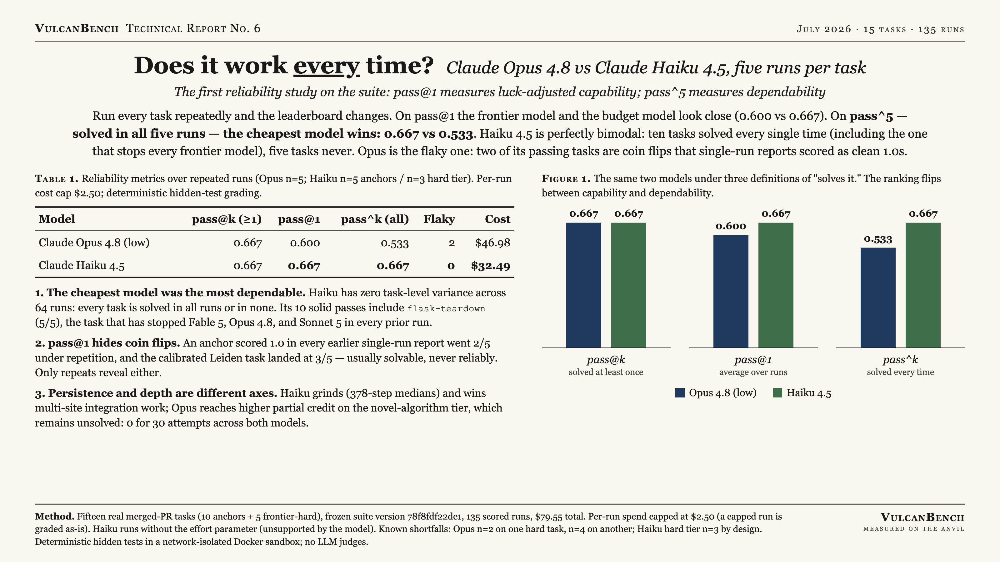
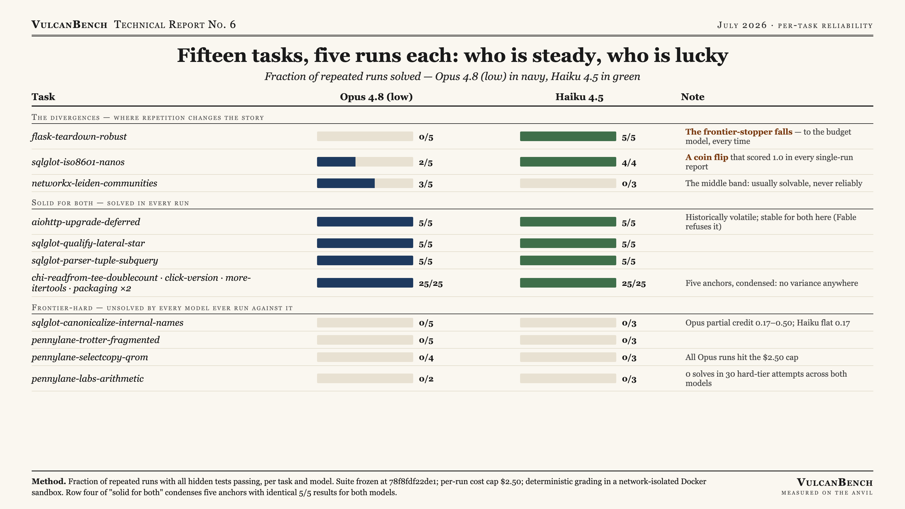

Single-run benchmarks measure luck-adjusted capability; repeated runs measure dependability, and the two rank models differently. On pass@1 the frontier model and the budget model look close (0.600 vs 0.667). On pass^5, solved in all five runs, the cheapest model wins: 0.667 vs 0.533. Haiku 4.5 is perfectly bimodal: ten tasks solved every single time, including the multi-site Flask redesign that has stopped every frontier model, and five frontier-hard tasks never solved. Opus 4.8 is the flaky one: two of its passing tasks are coin flips that every previous single-run report scored as clean 1.0s.

| Model | pass@k (≥1) | pass@1 | pass^k (all) | Flaky tasks | Runs | Cost |
|---|---|---|---|---|---|---|
| Claude Opus 4.8 (low) | 0.667 | 0.600 | 0.533 | 2 | 71 | $46.98 |
| Claude Haiku 4.5 | 0.667 | 0.667 | 0.667 | 0 | 64 | $32.49 |
Per-task repeats: Opus n=5 (two shortfalls noted under Method); Haiku n=5 on anchors, n=3 on the hard tier by design. pass^k requires solving a task in every attempt: the dependability number.
The cheapest model was the most dependable. Haiku has zero task-level variance across 64 runs: every task is solved in all runs or in none, so its pass@1, pass@k, and pass^k coincide at 0.667. Its ten solid passes include flask-teardown-robust (5/5), the task that has stopped Fable 5, Opus 4.8, and Sonnet 5 in every prior run, and aiohttp-upgrade-deferred (5/5), which Fable refuses outright.
pass@1 hides coin flips. sqlglot-iso8601-nanos scored 1.0 in every earlier single-run report; under repetition it is 2/5 for Opus-low. The calibrated Leiden task landed at 3/5, a genuine middle-band task, usually solvable, never reliably. Neither behavior is visible at n=1.
Persistence and depth are different axes. Haiku grinds, with 378-step medians, and that persistence reliably closes multi-site integration work. But it hits the novel-algorithm tier as hard as everyone else (0/15), with lower partial credit than Opus (canonicalize flat 0.17 vs Opus reaching 0.50; Leiden 0/3 vs 3/5). Step-grinding buys reliability on breadth, not capability on depth.
The frontier-hard tier holds. Zero solves in 30 attempts across both models. Every configuration ever run against it, Fable 5, Opus 4.8, Sonnet 5, and now Haiku 4.5, has failed it.

Fifteen tasks from real merged pull requests (10 anchors + 5 frontier-hard), all merged after model training cutoffs, graded by deterministic hidden tests in a network-isolated Docker sandbox; no LLM judges. Suite frozen at version 78f8fdf22de1; every run records the task hash it was scored against. Per-run agent spend capped at $2.50 (a capped run is graded as-is and reported as a bounded DNF); Haiku runs without the effort parameter, which the model rejects.
Coverage shortfalls, stated plainly: Opus has n=2 on one hard task and n=4 on another (all four of those runs hit the $2.50 cap); Haiku has n=4 on one anchor and n=3 on the hard tier by design. Budget breakers stop launching new runs but let in-flight runs finish; the Opus pass overshot its $38 cap to $43.13. The 135-run study cost $79.55, made affordable by per-run caps, budget breakers, and gap-filling resume.
{kind=link}
{kind=link}